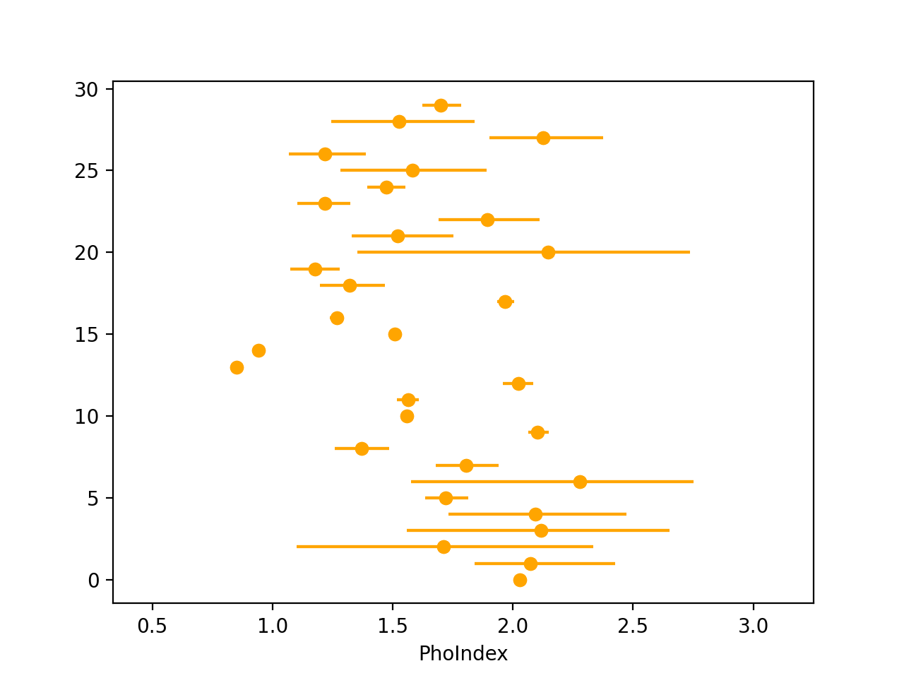

When constraining a parameter for a sample of sources, it can be useful to determine what parent model could have generated the parameter posteriors you have constrained. This session uses Hierarchical Bayesian modelling to do this.
Key objectives:
- Understand the concept of parent distributions
- Combine individual posteriors to constrain a parent distribution
- Constrain a variety of parent distribution models for a given set of posteriors
- PyXspec (using
fakeit):mymod = Model("powerlaw") mymod.powerlaw.PhoIndex.values = (1.9, 0.01, -3., -3., 3., 3.) mymod.powerlaw.norm.values = (1.e-3, 0.01, 1.e-8, 1.e-8, 1., 1.) fakeit_kwargs = {} fakeit_kwargs["response"] = "chan.rmf" fakeit_kwargs["arf"] = "chan.arf" fakeit_kwargs["background"] = "sim_chan_bkg.pi" fakeit_kwargs["exposure"] = 30.e3 fakeit_kwargs["correction"] = "1." fakeit_kwargs["backExposure"] = 30.e3 fakeit_kwargs["fileName"] = "sim_chan.pi" AllData.fakeit(1, FakeitSettings(**fakeit_kwargs))
- Sherpa (using
fake_pha):mymod = xspowerlaw.mypow set_par(mymod.phoindex, val = 1.9, min = -3., max = 3.) set_par(mymod.norm, val = 1.e-3, min = 1.e-8, max = 1.) load_pha(1, "chan_src.pi") #loading pre-exising source spectrum with rmf, arf & bkg present set_source(1, mymod) fakepha_kwargs = {} fakepha_kwargs["rmf"] = get_rmf() fakepha_kwargs["arf"] = get_arf() fakepha_kwargs["bkg"] = get_bkg() fakepha_kwargs["exposure"] = 30.e3 fake_pha(1, **fakepha_kwargs) save_pha(1, "sim_chan.pi", clobber = True)
For these exercises, we will constrain two parent distributions from a simulated population of sources. The model being used is a version of
model2
- To generate the posterior samples used in this exercise, download and run the following PyXspec (
$ python3 exercise4.1.py). The script will generate 30 spectra and fit with BXA to produce UltraNest output folders.- Simulating NuSTAR spectra from
model2(see Exercise 1.3), withPhoIndexsampled from a Gaussian distribution 1.8 +/- 0.3. Note you will need the Point source simulation files distributed by the NuSTAR team to run the scripts (more info here). - Each spectrum will then be fit with BXA using non-informative priors for line-of-sight column density, powerlaw photon index and powerlaw normalisation.
- Simulating NuSTAR spectra from
- The script may take some time (~ a few hours) to complete. Alternatively, you can download some pre-generated UltraNest folders using a similar model here.
- From inside the
ultranest_posteriorsdirectory, run:$ load_ultranest_outputs.py fitsim0/ fitsim1/ fitsim2/ fitsim3/ fitsim4/ fitsim5/ fitsim6/ ... \ --samples 1000 \ --parameter PhoIndex \ --out posterior_samples.txt
- The
posterior_samples.txtfile contains 1000 sampled rows of each posterior. - Important: if the posterior samples were obtained with a non-uniform prior, the posterior samples should first be resampled according to the inverse of the prior that was used.
- Visualise the data by calculating the 16th, 50th & 84th quantiles of each posterior sample and plotting as an errorbar. E.g., in Python:
import numpy as np import pandas as pd quantiles = [16, 50, 84] x = np.loadtxt("posterior_samples.txt") q = np.percentile(x, quantiles, axis = 1) df = pd.DataFrame(data = {"q%d" %(qvalue): q[i] for i, qvalue in enumerate(quantiles)}) import matplotlib.pyplot as plt plt.xlabel("PhoIndex") plt.errorbar(x=df["q50"], xerr=[df["q50"]-df["q16"], df["q84"]-df["q50"]], y=range(len(df)), marker="o", ls=" ", color="orange") plt.xlim(df["q16"].min() - 0.5, df["q84"].max() + 0.5) plt.show()
 - Run PosteriorStacker:
$ posteriorstacker.py posterior_samples.txt 0.5 3. 10 --name="PhoIndex" - PosteriorStacker then fits two models for the parent sample distribution: a histogram model with each bin height as the free parameters (using a Dirichlet prior) and a Gaussian model with mean and sigma as the free parameters.
- Examine the
posteriorsamples.txt_out.pdffile. - What can you say about the distribution of
PhoIndex? What would happen if you acquired more posterior samples (i.e. by increasingpopulation_sizein the simulation scripts) and/or used higher signal-to-noise spectra to fit?
Exercise 4.1 - Gaussian parent distribution
Here we will combine several individual source posterior distributions to derive a sample distribution for the photon index .
- Install PosteriorStacker:
$ conda install -c conda-forge posteriorstacker
Alternatively, you can just download the script and use it in your directory. - To generate the posterior samples used in this exercise, download and run the following PyXspec (
$ python3 ex21_pyxspec.py) or Sherpa ($ sherpa ex21_sherpa.py) script. The script will generate 30 UltraNest output folders by:- Simulating NuSTAR spectra from an
absorbed powerlawmodel (see Exercise 1.3), withPhoIndexsampled from a Gaussian distribution 1.8 +/- 0.3. Note you will need the Point source simulation files distributed by the NuSTAR team to run the scripts (more info here). - Each spectrum will then be fit with BXA using non-informative priors for line-of-sight column density, powerlaw photon index and powerlaw normalisation.
- Simulating NuSTAR spectra from an
- The script may take some time (~ a few hours) to complete. Alternatively, you can download some pre-generated UltraNest folders using a similar model here.
- From inside the
ultranest_posteriorsdirectory, run:$ load_ultranest_outputs.py fitsim0/ fitsim1/ fitsim2/ fitsim3/ fitsim4/ fitsim5/ fitsim6/ ... \ --samples 1000 \ --parameter PhoIndex \ --out posterior_samples.txt
- The
posterior_samples.txtfile contains 1000 sampled rows of each posterior. - Important: if the posterior samples were obtained with a non-uniform prior, the posterior samples should first be resampled according to the inverse of the prior that was used.
- Visualise the data by calculating the 16th, 50th & 84th quantiles of each posterior sample and plotting as an errorbar. E.g., in Python:
import numpy as np import pandas as pd quantiles = [16, 50, 84] x = np.loadtxt("posterior_samples.txt") q = np.percentile(x, quantiles, axis = 1) df = pd.DataFrame(data = {"q%d" %(qvalue): q[i] for i, qvalue in enumerate(quantiles)}) import matplotlib.pyplot as plt plt.xlabel("PhoIndex") plt.errorbar(x=df["q50"], xerr=[df["q50"]-df["q16"], df["q84"]-df["q50"]], y=range(len(df)), marker="o", ls=" ", color="orange") plt.xlim(df["q16"].min() - 0.5, df["q84"].max() + 0.5) plt.show()
- Run PosteriorStacker:
$ posteriorstacker.py posterior_samples.txt 0.5 3. 10 --name="PhoIndex" - PosteriorStacker then fits two models for the parent sample distribution: a histogram model with each bin height as the free parameters (using a Dirichlet prior) and a Gaussian model with mean and sigma as the free parameters.
- Examine the
posteriorsamples.txt_out.pdffile. - What can you say about the distribution of
PhoIndex? What would happen if you acquired more posterior samples (i.e. by increasingpopulation_sizein the simulation scripts) and/or used higher signal-to-noise spectra to fit?
Exercise 4.2 - histogram parent distribution
Now you have created a parent population for photon index using PosteriorStacker, this exercise will focus on the NH distribution.
Context: The column density (NH) distribution is a useful quantity for studies of accreting supermassive black holes (aka Active Galactic Nuclei; AGN).
Of particular interest in this regard is the "Compton-thick" fraction - i.e. the fraction of sources with log NH / cm-2 > 24.
The goal of this exercise is to estimate the uncertainty on each bin in a log NH distribution from a survey of 30 AGN.
For the AGN being simulated, we can assume:
The goal of this exercise is to estimate the uncertainty on each bin in a log NH distribution from a survey of 30 AGN.
For the AGN being simulated, we can assume:
- Every AGN follows the same baseline model:
model = TBabs[Gal] * TBabs[AGN] * powerlaw
Where:TBabs[Gal]is the absorbing column density arising from the Milky Way, assumed to be NH = 1020 cm-2 for every AGN.TBabs[AGN]is the absorbing column density at the source. This is the parameter we want to generate a population NH distribution from.powerlawis the intrinsic emission from the AGN, with photon index within 1.9 ± 0.1 and normalisation within 10-4 to 10-1 photons/keV/cm2/s at 1 keV.
Note this assumes that every AGN is at redshift zero.
- Every AGN has a column density NH in the range 1020 - 1025 cm-2. (Remember the units of NH in
TBabsis 1022 cm-2!) - Every AGN observation will be carried out by NuSTAR. Note the energy range for spectral analysis will be 3-78 keV, and you can assume observation exposures of 100 ks with no background present. Response (
nustar.rmf) and effective area (point_30arcsecRad_1arcminOA.arf) files can be found in the point source simulation files (distributed by the NuSTAR team, more info here). - The parent NH distribution follows this shape:

To generateNrandom log NH values from this distribution, you can use the following code:import scipy.interpolate import numpy as np np.random.seed(42) fractions = [0.25, 0.05, 0.15, 0.2, 0.3] bins = [20., 21., 22., 23., 24., 25.] cdf = np.append(0., np.cumsum(fractions) / np.sum(fractions)) interp_cdf = scipy.interpolate.interp1d(cdf, bins, bounds_error = False) rands = np.random.uniform(size = N) random_lognh_values = interp_cdf(rands)
- Simulate 30 AGN spectra from the model described in the assumptions above, each with a randomly generated log NH value.
- Re-fit each spectrum with BXA to generate log NH posteriors for each source.
- Combine the individual log NH posteriors with PosteriorStacker to estimate the NH distribution with the same bins as in the above plot.
- Estimate the fractions for each log NH bin from the histogram model
results["samples"], e.g.:
lo_hist = np.quantile(result["samples"], 0.16, axis = 0) mid_hist = np.quantile(result["samples"], 0.5, axis = 0) hi_hist = np.quantile(result["samples"], 0.84, axis = 0)
- Can your NH distribution constraints be improved? How could spectra below 3 keV help constrain the NH distribution?
Exercise 4.3 - preparing for a proposal
Now you have created a parent population for photon index using PosteriorStacker, this exercise will focus on the NH distribution.
Context: The column density (NH) distribution is a useful quantity for studies of accreting supermassive black holes (aka Active Galactic Nuclei; AGN).
Of particular interest in this regard is the "Compton-thick" fraction - i.e. the fraction of sources with log NH / cm-2 > 24.
The goal of this exercise is to estimate the uncertainty on each bin in a log NH distribution from a survey of 30 AGN.
For the AGN being simulated, we can assume:
The goal of this exercise is to estimate the uncertainty on each bin in a log NH distribution from a survey of 30 AGN.
For the AGN being simulated, we can assume:
- Every AGN follows the same baseline model:
model = TBabs[Gal] * TBabs[AGN] * powerlaw
Where:TBabs[Gal]is the absorbing column density arising from the Milky Way, assumed to be NH = 1020 cm-2 for every AGN.TBabs[AGN]is the absorbing column density at the source. This is the parameter we want to generate a population NH distribution from.powerlawis the intrinsic emission from the AGN, with photon index within 1.9 ± 0.1 and normalisation within 10-4 to 10-1 photons/keV/cm2/s at 1 keV.
Note this assumes that every AGN is at redshift zero.
- Every AGN has a column density NH in the range 1020 - 1025 cm-2. (Remember the units of NH in
TBabsis 1022 cm-2!) - Every AGN observation will be carried out by NuSTAR. Note the energy range for spectral analysis will be 3-78 keV, and you can assume observation exposures of 100 ks with no background present. Response (
nustar.rmf) and effective area (point_30arcsecRad_1arcminOA.arf) files can be found in the point source simulation files (distributed by the NuSTAR team, more info here). - The parent NH distribution follows this shape:
To generateNrandom log NH values from this distribution, you can use the following code:import scipy.interpolate import numpy as np np.random.seed(42) fractions = [0.25, 0.05, 0.15, 0.2, 0.3] bins = [20., 21., 22., 23., 24., 25.] cdf = np.append(0., np.cumsum(fractions) / np.sum(fractions)) interp_cdf = scipy.interpolate.interp1d(cdf, bins, bounds_error = False) rands = np.random.uniform(size = N) random_lognh_values = interp_cdf(rands)
- Simulate 30 AGN spectra from the model described in the assumptions above, each with a randomly generated log NH value.
- Re-fit each spectrum with BXA to generate log NH posteriors for each source.
- Combine the individual log NH posteriors with PosteriorStacker to estimate the NH distribution with the same bins as in the above plot.
- Estimate the fractions for each log NH bin from the histogram model
results["samples"], e.g.:
lo_hist = np.quantile(result["samples"], 0.16, axis = 0) mid_hist = np.quantile(result["samples"], 0.5, axis = 0) hi_hist = np.quantile(result["samples"], 0.84, axis = 0)
- Can your NH distribution constraints be improved? How could spectra below 3 keV help constrain the NH distribution?